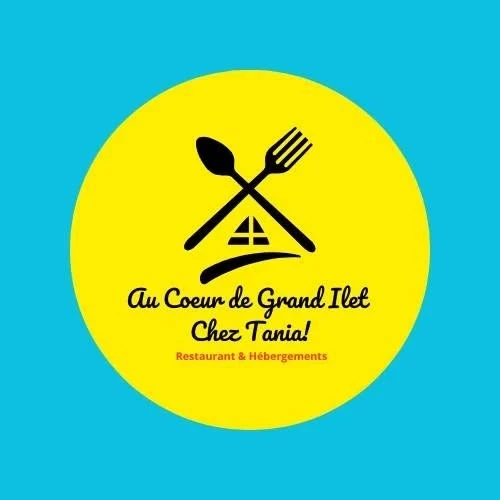

Réserver une table
Un coup de fil et votre table vous attend : idéal pour connaître le menu du jour et l'heure qui vous arrange.
0692 57 67 15
Restaurant & Hébergements · Grand Ilet, Salazie
Une table traditionnelle et un toit pour la nuit, là-haut, dans le cirque de Salazie.
La maison
Chez Tania, c'est un restaurant traditionnel installé à Grand Ilet, le village perché du cirque de Salazie. Ici, on monte pour la route, les sommets et les cascades… et on s'attable pour un vrai repas de chez nous.
« Restaurant & Hébergements » : une table pour se régaler, un toit pour prolonger le séjour.
Votre venue
Un repas après la balade, une nuit pour profiter du lever du jour sur les remparts : trois façons simples de préparer votre passage chez Tania.
Un coup de fil et votre table vous attend : idéal pour connaître le menu du jour et l'heure qui vous arrange.
0692 57 67 15Prolongez la journée à Grand Ilet : demandez les disponibilités des hébergements directement à la maison.
Demander sur WhatsAppCap sur Salazie, puis la route de Grand Ilet jusqu'au village : l'itinéraire s'ouvre en un geste.
Ouvrir l'itinéraireLe chemin
Le plaisir commence dès la route : on quitte le littoral, on entre dans le cirque, et les cascades accompagnent la montée jusqu'au village.
Illustration · la montée vers Grand Ilet
Offrir pour Noël
Un repas au cœur du cirque, une nuit à Grand Ilet : un cadeau qui fait voyager, à vivre ensemble.
Une belle table traditionnelle à partager, au cœur du village.
Un séjour dans le cirque de Salazie, avec repas et hébergement chez Tania.
Famille, amis, collègues : réservez votre grande tablée pour fêter la fin d'année.
Illustration · bon cadeau
Contact
Au Cœur de Grand Ilet · Chez Tania
Restaurant traditionnel & hébergements
Adresse
2 route de Roche à Jacquot, Grand Ilet, 97433 Salazie
Téléphone & WhatsApp
0692 57 67 15
Facebook
Chez Tania Grand Ilet
Un appel suffit pour connaître le menu du jour et réserver votre table.
Repas en famille, pause après la randonnée ou nuit dans le cirque : la maison vous répond au téléphone et sur WhatsApp.